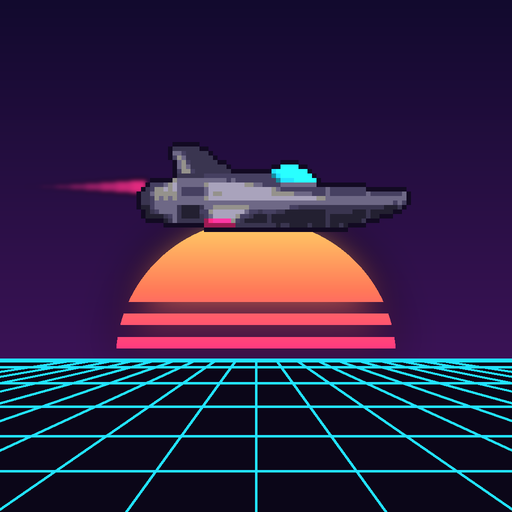

Sunset Static
Ride the neon grid
Fly a needle ship through a neon synthwave night, then on into a giant arcade. Shoot the waves, charge a neon arrow beam, steer a shield pod and scoop up the coins every enemy drops. Spend them on upgrades between stages. No bosses. A hit costs shield, never progress.
Version 0.10.0. Release notes · Backlog


What kind of game is this?
Things to do
- Fly Stage 1, Grid Run, through six sections.
- Pick up the pod in the Pod Drop. Launch it, call it back and flip it front or back.
- Grab Spread and Bounce shots for the pod, speed chips and shield cells.
- Break shells with the pod or a full beam. Normal shots bounce off their front.
- Slip between Strobe Pairs: twin drones that link a laser beam on the beat. Break one and the other flees.
- Strip the three shield orbs off a Ring Carrier, then crack its hull for a pickup.
- Guard your back with the pod in the Skyline Tunnel. Chargers rush in from behind.
- Clear Stage 1 to open Stage 2, Insert Coin: marching Blips and gold coin bugs that drop coins.
- Dodge Prize Claws that drop from the ceiling on the beat, and Bumper Bots that bounce and fire rings.
- Collect the coins every enemy drops and spend them in the shop after each stage: shield bars, faster charge, stronger shots, pod upgrades, a coin magnet and new ship colors.
- Build a combo, beat your best score on each level and earn eleven achievements.
- Your progress saves on your device, in five save slots.
Controls
WASD or arrows fly. J or Space fires. Hold it to charge, let go for the beam. K launches or calls back the pod. L flips it. Q and E change speed. Esc opens the Menu.
Left stick or D-pad flies. A fires. Hold A to charge, let go for the beam. B launches or calls back the pod. Y flips it. LB and RB change speed. Menu or View opens the Menu. In menus A chooses and B goes back.
Drag anywhere to fly. The ship follows your thumb. Auto-fire is on. Hold Charge, then let go for the beam. Pod, Flip and Speed buttons show once you have them. Menu at the top right.
Play with an Xbox controller
Any Xbox Wireless Controller with Bluetooth works. That is every Series X|S controller and the Xbox One controllers made since 2016. If the plastic around the Xbox button matches the face of the controller, it has Bluetooth. Other controllers that your phone or browser sees as a standard gamepad use the same buttons.
- Hold the Xbox button to turn the controller on.
- Hold the small Pair button on top for 3 seconds, until the Xbox button flashes fast.
- On your phone, open Settings, then Connected devices, then Pair new device.
- Tap Xbox Wireless Controller. The Xbox button stays lit when it is connected.
- Open Sunset Static. The touch buttons hide as soon as you use the controller.
- Connect the controller to your computer with a USB cable or Bluetooth.
- Open Play in your browser. Chrome, Edge, Firefox and Safari all work.
- Press any button once after the game loads, so the browser sees the controller.
The D-pad or left stick moves between buttons. A chooses and B goes back. You can play the whole game with only the controller.
Install on Android
- Tap Download for Android on this page.
- Open the file. Allow installs from your browser if your phone asks.
- Tap Install, then Open.
- Each new version installs over the last one. Your saves stay.
Android may show a Play Protect notice for apps from outside the Play Store. Version 0.10.0 installs over the last version and keeps your saves.
Feedback wanted
- How enemies, coins and bullets read over the new painted backgrounds on your phone.
- Whether shop prices feel fair and the upgrades feel worth it.
- Whether the stages end well without bosses.
- Anything that looks wrong, with a screenshot.